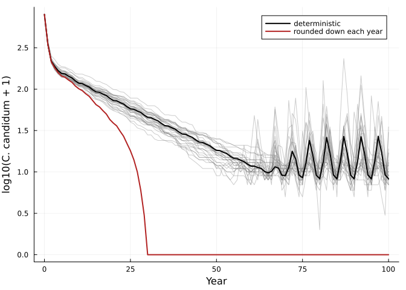

Equilibria, invasion and chance
Simon Frost
- The sensitivity of an equilibrium, without a sweep
- Who persists? Invasion rates in a fluctuating environment
- Chance: whole individuals
- Reference
ENV["GKSwstype"] = "100"
using MatrixCommunityModels
using LinearAlgebra, Plots, Printf, Random, StatisticsLytle & Tonkin (2023) close with “a call for more theory and more analysis tools”, noting that communities of more than two species have so far been analysed only by simulation. Because a composed community here is an explicit map from one year’s state to the next, some questions can be answered more directly. This vignette shows three.
The sensitivity of an equilibrium, without a sweep
The regression recipe of the sensitivity vignette runs the model at many values of a vital rate. In a constant environment with a stable equilibrium n*, the same derivative follows from the model’s Jacobian J at n*:
\[\frac{d n^*}{d\theta} = (I - J)^{-1} \frac{\partial f}{\partial \theta}\]
where f is one time step. equilibrium_sensitivity does this. For a shrub alone in 1000 units of space, with seed production f per adult:
K = 1000.0
crowding(ctx) = max(0.0, 1 - ctx.pool.space / K)
shrub(f) = Species(:shrub, [:seedling, :juvenile, :adult],
[survival(:establish, :seedling => :juvenile, 0.30),
survival(:mature, :juvenile => :adult, 0.50),
survival(:persist, :adult => :adult, 0.95),
fecundity(:seed, :adult => :seedling, ctx -> f * crowding(ctx))];
occupancy = [:space => [0.1, 1.0, 4.0]])
build(f) = (community = community(shrub(f)), n0 = [5.0, 0.0, 1.0])
direct = equilibrium_sensitivity(build, 3.0, nothing)
(equilibrium = round.(direct.n; digits = 2), derivative = round.(direct.dn; digits = 3))(equilibrium = [71.68, 21.51, 215.05], derivative = [2.987, 0.896, 8.961])This species replaces itself when the free fraction of space is 1/(3f), so the space in use at equilibrium is K(1 - 1/(3f)) and its derivative with respect to f is K/(3f²), which is 37.04 at f = 3:
dot([0.1, 1.0, 4.0], direct.dn), K / (3 * 3.0^2)(37.03703704248879, 37.03703703703704)The regression recipe gives the same answer from eleven long projections:
sweep = abundance_sensitivity(build, collect(2.95:0.01:3.05), fill(nothing, 4000); burnin = 3500)
round.(sweep.slope; digits = 3)3-element Vector{Float64}:
2.987
0.896
8.962The direct method needs a constant environment and a smooth step at the equilibrium. In a fluctuating environment, or where a threshold is active, the regression recipe is the one to use.
Who persists? Invasion rates in a fluctuating environment
Lytle & Tonkin remark that if the Verde River fish model is projected far enough “all fish species eventually go extinct except one”, typically the species with the highest single-species stochastic growth rate. Invasion analysis asks the sharper question: can a species increase from rarity in the community formed by the others, under the actual sequence of year types?
stochastic_invasion_rate projects the resident community, then follows a rare invader whose vital rates see the residents’ pool totals and each year’s environment. Here the 1964-2017 flow record is repeated ten times.
m = verde_fish_model()
envs = repeat(m.envs, 10)
fish = species(m.community)
# growth in an empty river: the resident is a community with nobody in it
nobody = open_community(first(fish))
empty_rate = [stochastic_invasion_rate(sp, nobody, zeros(3), envs) for sp in fish]
# growth when rare in the community of the other six
invasion_rate = map(fish) do sp
residents = community((s for s in fish if s.name != sp.name)...)
n0 = [p for p in m.n0 if p.first != sp.name]
stochastic_invasion_rate(sp, residents, n0, envs; burnin = 108)
end
for (sp, e, r) in zip(fish, empty_rate, invasion_rate)
@printf("%-5s empty river %.3f invading the other six %.3f\n", sp.name, e, r)
endCACL empty river 1.250 invading the other six 0.961
GIRO empty river 1.334 invading the other six 0.981
LECY empty river 1.370 invading the other six 0.990
CAIN empty river 1.238 invading the other six 0.985
MIDO empty river 1.242 invading the other six 0.983
CYLU empty river 1.511 invading the other six 1.012
AMNA empty river 1.280 invading the other six 1.003Every species grows in an empty river. Only two, the non-native red shiner (CYLU) and yellow bullhead (AMNA), have an invasion rate above one. The long projection agrees:
long = project(m.community, m.n0, envs)
[s => round(sum(long[s][end, :]); digits = 1) for s in species_names(m.community)]7-element Vector{Pair{Symbol, Float64}}:
:CACL => 0.0
:GIRO => 0.0
:LECY => 9.4
:CAIN => 8.4
:MIDO => 1.0
:CYLU => 28092.0
:AMNA => 8025.1After 540 years the biomass is almost entirely those two species. The invasion rates give this answer from properties of each species and the community it meets, which is also what makes them useful for asking what would have to change for a native species to persist.
Chance: whole individuals
Deterministic projection tracks fractions of individuals. The adapt3 orchid example handles this by rounding each stage down to a whole number every year. An alternative is demographic stochasticity: each individual survives and moves with the probabilities in its column of the survival matrix, and births are Poisson. Passing a random number generator to project does this.
c = cypripedium_model()
rng = Xoshiro(1)
runs = [project(c.community, c.n0, c.envs; rng) for _ in 1:200]
total(sol, sp) = vec(sum(sol[sp]; dims = 2))
floored = project(cypripedium_model(integeronly = true).community, c.n0, c.envs)
smooth = project(c.community, c.n0, c.envs)
p = plot(; xlabel = "Year", ylabel = "log10(C. candidum + 1)", legend = :topright)
for sol in runs[1:30]
plot!(p, sol.t, log10.(total(sol, :candidum) .+ 1); color = :grey, alpha = 0.4, label = "")
end
plot!(p, smooth.t, log10.(total(smooth, :candidum) .+ 1); lw = 2, color = :black, label = "deterministic")
plot!(p, floored.t, log10.(total(floored, :candidum) .+ 1); lw = 2, color = :firebrick, label = "rounded down each year")
p
extinct(sol, sp) = something(findfirst(==(0), total(sol, sp)), 102) - 1
(rounded_down = (candidum = extinct(floored, :candidum), parviflorum = extinct(floored, :parviflorum)),
candidum_extinct_by_100 = count(extinct(s, :candidum) <= 100 for s in runs),
parviflorum_extinct_by_100 = count(extinct(s, :parviflorum) <= 100 for s in runs),
parviflorum_median_extinction_year = median(extinct(s, :parviflorum) for s in runs))(rounded_down = (candidum = 30, parviflorum = 69), candidum_extinct_by_100 = 0, parviflorum_extinct_by_100 = 196, parviflorum_median_extinction_year = 62.0)Rounding down every year removes a fraction of an individual from every stage every year, which is a steady extra mortality, and drives C. candidum extinct in year 30. With individuals treated as whole but chance allowed to go either way, C. candidum is still present after 100 years in every one of 200 runs. The two treatments of the same model give opposite conclusions about that species, so the choice is not a detail.
Demographic stochasticity requires the survival matrix to contain probabilities (columns summing to at most one), which the package checks. The fish model, whose state is biomass and whose transitions include growth in mass, is correctly refused:
try
project(m.community, round.(reduce(vcat, last.(m.n0))), m.envs[1:2]; rng)
catch err
println(first(split(sprint(showerror, err), ";")))
endArgumentError: survival matrix of :CACL has a column summing to 5.423611111111111Reference
Lytle, D. A. & Tonkin, J. D. (2023). Matrix community models for ecology and evolution. npj Biodiversity 2, 26.